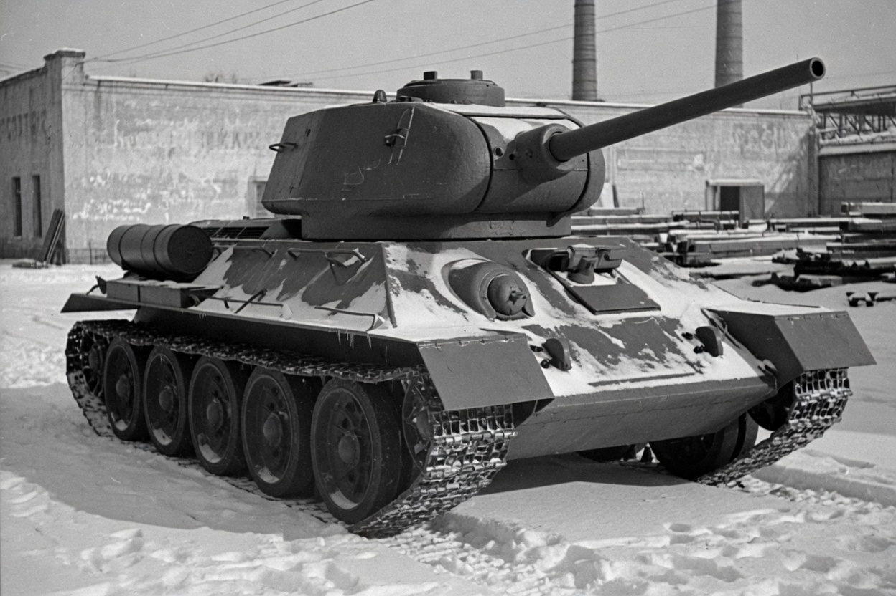
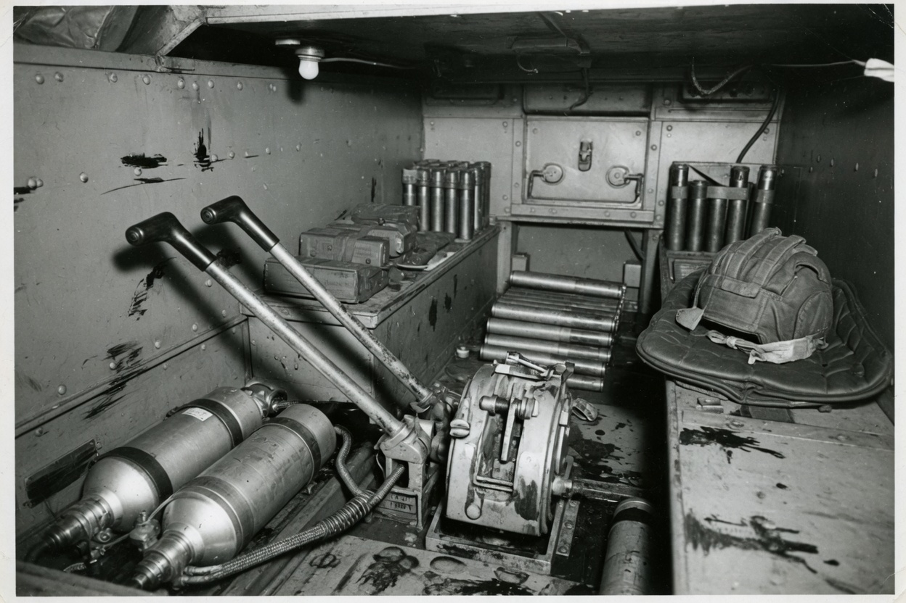
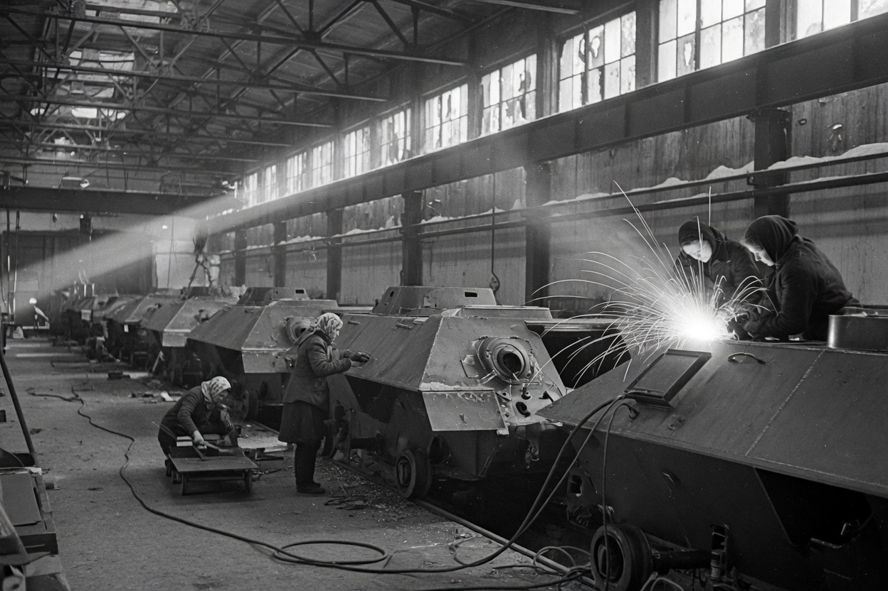
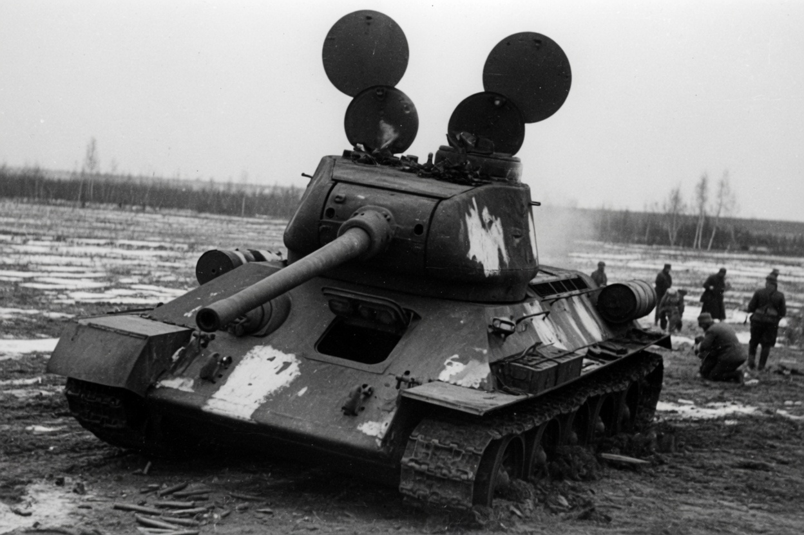
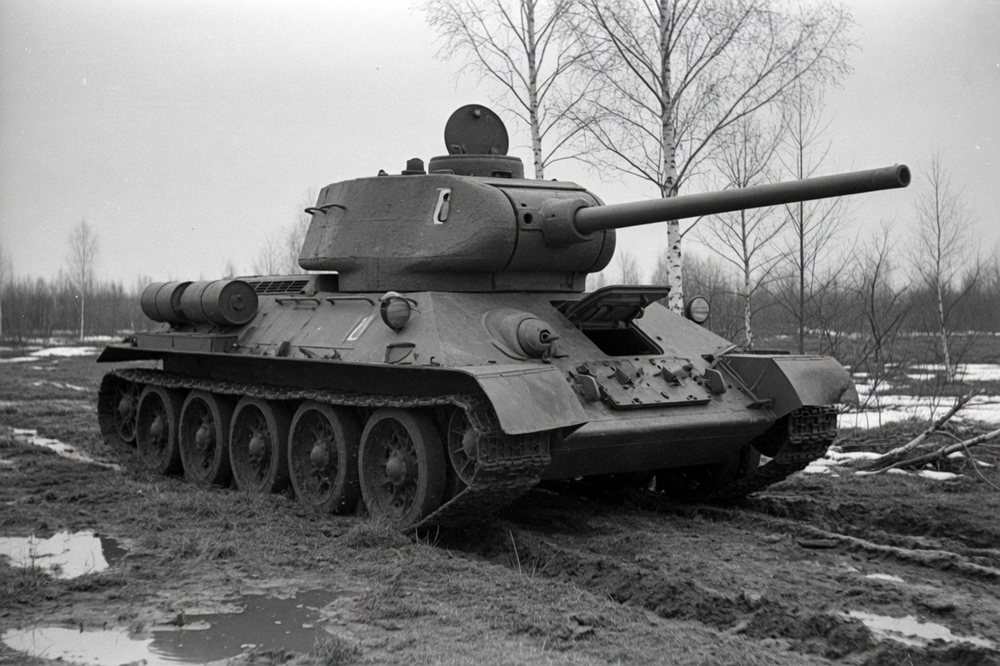
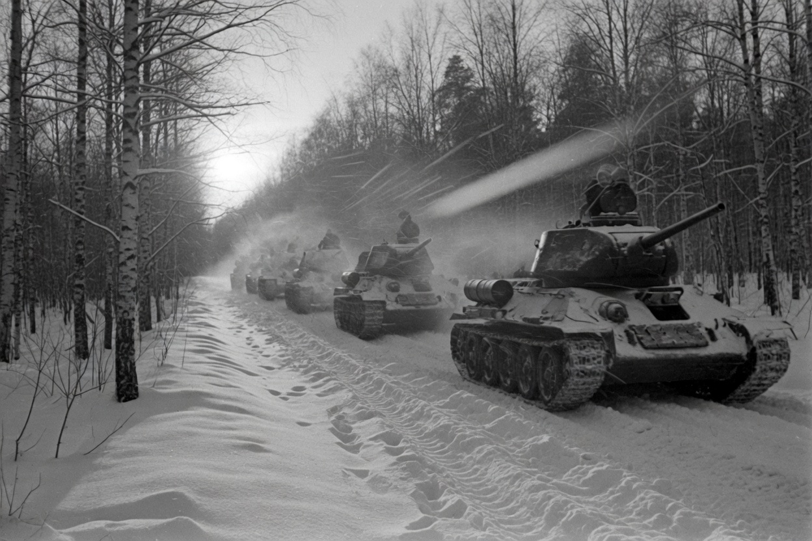

A condensed reading of a Pen & Sword pictorial
Thirty-Four
The tank that was not the official design, that almost died with its designer, and that then would not stop coming off the line.
A condensed reading of a Pen & Sword pictorial
The tank that was not the official design, that almost died with its designer, and that then would not stop coming off the line.
Tucker-Jones opens with a dare: the T-34 is “the one weapon that truly won the Second World War.” France, Italy, North Africa, even the Far East were, when it came to armour, sideshows. He walks the boast back at the end — the numbers are “so astonishing as to be literally unbelievable,” tainted by postwar propaganda, unverifiable — and then he keeps the point that actually matters. The Soviets produced more tanks than the Germans could knock out. Industry won. The T-34 was the tank the factories could actually pour.
His last word is the one to keep: “The T-34 was no wonder weapon, but it was good and it just happened to be in the right place at the right time. It proved to be what Stalin and the Red Army needed — a true war winner.”
This is that book, shortened. The photographs are newly made in the grain of his plates. The numbers are his, including the ones he argues with himself about.
Chapter 01
Kharkov · 1936 — 1940
Almost nothing on the T-34 is original. Christie suspension via the BT fast tanks. Diesel because petrol caught fire in Spain. Slope because a 37mm shell had started winning. The achievement, Tucker-Jones says, is the combination — and the man who forced it was not even supposed to be building this tank.
Mikhail Koshkin arrived at the Kharkov Locomotive Factory in 1936 because the previous bureau chief, Firsov, and much of the BT team had been arrested. The official job was the A-20: a medium tank that could run on wheels or tracks, like a Christie. Koshkin hated the dual drive. The Red Army almost never used the wheeled mode. It added weight and misery. He wanted tracks only, thicker armour, and a 76.2mm gun instead of the standard 45. That meant a different tank. He built it anyway, and took it to Stalin himself.

Three prototypes came out of the argument: A-20 (wheels and tracks), A-30 (abandoned — turret too small), A-32 (tracks only, armour toward 60mm). Project T-34 was the A-32 after a transmission rethink. Accepted for service on 19 December 1939 with the prototype still incomplete.
In February 1940 Koshkin personally drove two tanks Kharkov–Moscow–Smolensk–Kiev–Kharkov to prove the tracks-only machine over the official one. He could have sent someone else. He contracted pneumonia. He died in hospital on 26 September 1940. He never saw his tank in combat.
Either prison or a medal. Marshal Kulik’s method, as remembered by his deputy Voronov — the weather the T-34 was born in
The other villains in the room are almost as important as the designer. Marshal Kulik, head of the Main Artillery Directorate, wanted a 107mm fantasy because Stalin remembered a First World War field gun of that size. He sat on the better F-34 76.2mm from Gorkiy and forced the short L-11 from his own Kirov works onto the Model 1940. He had armaments chief Vannikov arrested on the eve of the invasion. Grabin, at Gorkiy, quietly stockpiled F-34s anyway. Kulik also produced a shell shortage, so many T-34s and KVs went to war under-ammunitioned.
Leningrad was building the KV heavy for Voroshilov. Kharkov was building the medium. Both plants would have to move. The T-34’s new home would be called, without irony, Tankograd.
One more ghost: Konstantin Chelpan, the actual father of the aluminium V-2 diesel. Arrested late 1937 as a “foreign saboteur,” tortured, shot in 1938 as the first engines went into production. Papers said congestive heart failure. The truth was acknowledged in 1988. The metal he chose — aluminium — is the reason the Germans could never quite copy the engine. They did not have it to spare.
Chapter 02
A four-man cell · 26 tons
Tucker-Jones crawled through a running Model 1945 T-34/85 at the Cobbaton Combat Collection so he would not get starry-eyed. Diesel stink. Grease on every surface. Padded helmets because the inside is a steel prison full of sharp edges. Under way it is “a very noisy, roaring, clanking monster that belches smoke.” When a round clangs on the outside, relief that you are alive is followed by frantic work.

The driver’s cell Tillers. Crash gearbox. Two compressed-air bottles at the feet for a cold start. Ammunition where a man might want to sleep. “When changing from first to second gear, especially on soft ground, the tank will probably stop before the driver can engage second.”
The numbers, as the book gives them, wobble slightly from chapter to chapter — 500 hp or 493, 30 mph or 34 — which is honest. A V-2-34 V-12 diesel in the rear. Road speed in the low thirties. Range 302 km, 450 with extras. Tracks almost two feet wide, plates held by steel pins that a buffer on the hull knocks back in as they pass: a peasant’s idea of a master-link, and it worked. Four-man crew. The commander is also the gunner, which is why German panzer leaders, heads out of a cupola, could think rings around him. One huge hatch on the early turret, so opening it exposed the loader too.
What the squat hull could do, later, is the trick no one else had. Churchill, Cromwell, Sherman, Panzer IV, Panther: their hulls would not take a bigger turret, so they could not take a bigger gun. The T-34 could swallow an 85mm anti-aircraft piece in a borrowed heavy-tank turret and keep the same engine, the same tracks, the same factories. That is the whole war in one sentence.
Chapter 03
22 June 1941
On the morning Hitler invaded, 1,226 T-34s existed. They were 5 percent of the tank park. KV-1s were 2 percent. Everything Stalin had authorised in March — twenty mechanised corps — needed 16,600 latest-type tanks, or 32,000 to fill. Industry could not. Fedorenko had warned at the Kremlin war games that winter. Kulik was dismissive. Stalin said the balance was right. The chance to crank production before Barbarossa was lost.
Pavlov’s 6th Mechanised Corps held 238 T-34s with no armour-piercing rounds, one tank of fuel each, and half-trained crews. Radios were for company commanders. The rest used flags. Half the T-34s and KVs were gone in two weeks. The remainder died in the Kiev pocket. After Minsk, Pavlov was summoned to Moscow and shot.
| On the day | Number | Note |
|---|---|---|
| T-34s built | 1,226 | Models 1940 and 1941 |
| Share of tank park | 5% | KV-1s another 2% |
| Model 1940 with L-11 | ~400 | the short gun Kulik forced |
| Western MD T-34s | ~982 | plus 466 KV-1s |
| 6th Mech Corps T-34s | 238 | no AP · one fuel tank each |
The first honest German night-terror is not June. It is 6 October 1941, south of Mtsensk, Katukov’s T-34s against Guderian’s 4th Panzer Division. Tucker-Jones quotes the panzer general: “This was the first occasion on which the vast superiority of the Russian T-34 to our tanks became plainly apparent. The division suffered grievous casualties.” Short 50mm and 75mm needed about a hundred metres to punch the glacis. The T-34 killed III/IVs at a thousand. Only the 88 would do at range. Wide tracks on ice. Mellenthin later: they were not thrown in in large numbers until the spearheads were approaching Moscow, “and they then played a great part in saving the Russian capital.”
Chapter 04
Tankograd · 1941 — 1943
About 1,300 major enterprises went east. Kharkov’s factory 183 became Uralvagonzavod at Nizhny Tagil. Kirov from Leningrad joined the Chelyabinsk tractor works and became Tankograd. Voroshilov 174 went to Omsk. Gorkiy’s shipyard built T-34s that fought at Moscow in December. Stalingrad’s STZ welded turrets until the street-fight swallowed the plant. The first Chelyabinsk T-34s came off the line one month after the Leningrad plant arrived.
Zhukov asked Stalin for two hundred more tanks. Stalin: “We can’t give you any tanks; we don’t have any.” Khrushchev, on Paton’s portable fusion welder: “tanks started coming off our assembly lines like pancakes off a griddle.”

The Ural shops, 1942 Hulls on the line. Winter light. The war being welded by people who had never seen a panzer. Tanks were driven out of the factory doors into the snow at Moscow and into the siege at Stalingrad.
Epilogue figures. The introduction’s headline — ~55,000 T-34s, 68% of Soviet wartime tank production — is a different count. Tucker-Jones later says the totals are probably inflated. What he will not walk back: they built more than the Germans could kill.
Quality was the secret enemy. Nickel-poor plate spalled: splinters flayed the crew even without a penetration. Early transmissions were so bad crews reportedly lashed a spare to the engine deck. Some Gorkiy tanks got leftover Mikulin M-17T petrol aero engines — a licensed BMW VI — for want of V-2s. The first Pomon air filter was “wholly inadequate.” Later, twin Cyclones.
The Model 1943 hexagonal turret, actually introduced from May 1942, was a production trick that also killed a shot-trap. The Germans nicknamed it Mickey Mouse: two round hatches, open, looked like ears. It did away with the rear overhang that invited Teller mines. A cupola and a five-speed box arrived later. The gun was still a 76.2mm, designed to beat 37 and 50mm. From May 1942 the Panzer IV F2’s long 75mm killed T-34s at a thousand metres.
In 1943 the Red Army lost more than 14,000 T-34/76s — about 6,000 of them against Army Group South from July to December — and production kept pace. Vannikov’s plants were out-building panzers nearly three to one. Panther and Tiger were only about 41% of 1943 German panzer output. The Panzer IV remained the backbone. Reliability consolation, the book says: T-34 units 70–90% runners, Panther units about half that.

Chapter 05
The 85mm · 1943 — 1944
Nikolai Zheleznov, 63rd Brigade, 4th Tank Army: “In essence, until we got the 85mm gun we had to run from Tigers like rabbits, and look for an opportunity to turn back and get at their flanks.” If a Tiger at 800–1,000 metres started traversing, you could stay. Once the gun moved vertically, jump. “But when the T-34/85 entered service, we could stand up against enemy tanks one on one.”
The answer was an 85mm Model 1939 anti-aircraft gun recast as anti-tank: about 1,000 metres effective, 100mm of penetration, inaccurate at long range. First parked on a KV chassis as the KV-85 stopgap. Morozov, now chief designer, put a KV-85-derived cast turret on the T-34 hull. Five men at last. The commander no longer fired the gun. Frontal armour to a maximum of 75mm. Same V-2, same Christie coils. Approved 15 December 1943. Two hundred eighty-three by year-end. About 11,000 in 1944.

The grown-up T-34/85. Larger turret, five-man crew, long 85. The hull is still Koshkin’s. On 12 August 1944, at the Baranów bridgehead, Guards Lieutenant Os’kin of the 53rd Guards Tank Brigade ambushed three Tiger IIs in the side armour — the King Tiger’s first day on the Eastern Front.
Variants did the jobs the turret could not. SU-122: a 122mm howitzer in a box, about 1,150 built; HE concussion could “blast the turret off a Tiger at close range,” HEAT “did little.” SU-85: the 85mm in that casemate, about 2,050, no machine gun, infantry-vulnerable like an Elefant. SU-100 from September 1944: 100mm, 125mm of vertical at 2,000 metres, Panther glacis at 1,500, barrel so long it was a liability in forests and Carpathian hairpins. 2,335 by July 1945. Tucker-Jones: “the additional punch that the T-34/85 lacked.”
PT-34 mine rollers: two gangs of spiked discs, only as wide as each track, a gap in the middle. Survive ten 10 kg mines, then replace. First combat August 1942 at Voronezh. Lead role in Bagration. OT-34 flamethrowers: nozzle where the hull machine gun was, six two-second shots.
Aces, with the book’s own caution about propaganda. Lavrinenko, 1st Guards Tank Brigade: 52 panzers in two and a half months, killed 18 December 1941, age 27. Hero of the Soviet Union only on 5 May 1990. Even allowing for the posters, “he had certainly shown the way.”
Chapter 06
Bagration · Seelow · Berlin
Bagration opened at 0500 on 23 June 1944 — meant to match D-Day, slipped. A two-hour barrage. 24,000 guns and mortars on a 431-mile front, 90 percent of the artillery crammed onto 20 percent of the width. 1.7 million men. 2,715 tanks and 1,355 assault guns, about six times Army Group Centre. PT-34s leading into the Minsk–Moscow highway belts. At least five OT-34 flamethrower regiments.
Night of the 26th: Burdeyny’s 2nd Guards Tank Corps catches a German hospital train full of wounded leaving Orsha and blows it off the rails. Minsk liberated the evening of 3 July — “people danced in the streets and rode on the tanks.” Paris is still six weeks away. Army Group Centre in less than two weeks: 300,000 dead, 250,000 wounded, about 120,000 prisoners. Stalin loses 2,957 tanks. “Tankograd would enable him to shrug off such disastrous losses.”
Berlin. Seelow Heights, a horseshoe up to 200 feet over the Oderbruch. Zhukov’s 1st Byelorussian Front: almost a million men. Opens 16 April 1945. Chuikov drinks tea, then 8,983 guns fire. Seven million shells stockpiled; 1,236,000 on day one. Stalin telephones: breach, or Konev gets the city. Zhukov throws Katukov’s 1st Guards Tank Army into a job meant for exploitation, not breakthrough. T-34s die in heaps on a slope they cannot climb. Busse’s 9th Army knocks out more than 150 Soviet tanks in twenty-four hours of the main assault — not enough.
City fighting: mines, Molotovs, Hitler Youth with Panzerfausts via the sewers. Tanks drive through buildings to avoid street ambushes. Some T-34/85s wear grilles on hull and turret against petrol bombs. Coda: crews photographing themselves at the Brandenburg Gate. Another swarm of infantry and civilians on a T-34/85 in Prague in May.

The other German Report Series fact, from the other book on this shelf Russians used T-34s to pack snow roads. German tracks, that first winter, were too narrow. The same wide plates that made a dust-cloud in powder snow — crews ordered to crawl, and to drive on the sunlit verge so the shadow fell on the road.
Chapter 07
1945 — 1996
August 1945: T-34/85s through Japanese Manchuria “like a knife through butter.” Then almost five more decades. 25 June 1950: 150 Soviet T-34/85s spearhead the North Korean attack. The UN nickname is Caviar Cans. By the end of September the UN estimates the entire North Korean T-34 force — believed 239 — destroyed, against 60 UN tanks lost.
Then the policeman years. East Berlin and Poland, 1953. Budapest, 1956 — Soviets lose 40 tanks in the streets. Sinai 1956 and 1967: Egypt loses 251 T-34/85s and 51 SU-100s in the Six-Day War; Syria 73 plus 7 on the Golan. Cuban T-34s to Angola, 1975. Early 1990s: Croatian and Serb T-34/85s in the Yugoslav wars. The last plate in the book is Bosnian Serb hulls near Doboj in 1996, rubber sheets against magnetic mines.
Kotin’s heavies, the glamorous KV and IS family, beget the T-54 and T-62. About 8,000 ISU and IS vehicles against tens of thousands of T-34s. Koshkin’s medium goes to Berlin, then keeps going. He gets a Stalin Prize in 1942, Hero of Socialist Labour in 1990. Morozov designs until 1976; the Kharkov bureau is named for him. Vannikov stays armaments minister until 1962. Kulik is demoted into obscurity by 1943.
Germans spent 41% of 1943 tank capacity on Tiger and Panther and starved the Panzer IV. “It proved to be a strategic gamble, and Stalin won.” Loss ratios 1943 ~3:1, 1944 ~2:1, 1945 ~4:1 — Soviet tanks lost versus German, all fronts — and it did not matter.
If you remember six things from Tucker-Jones, remember these.
One. It was not supposed to exist. The official tank still had Christie road-wheels. Koshkin built a tracks-only outlaw, drove it to Stalin, and died of the proving run.
Two. On the day Hitler invaded, only one tank in twenty was a T-34 — and many of those had no armour-piercing shells and one tank of fuel. The man in charge of the western front was shot.
Three. The Germans’ first honest night-terror is Mtsensk, 6 October 1941. Short 50s and 75s bounce. Guderian writes “grievous casualties.” Only the 88 will do.
Four. They moved 1,300 factories behind the Urals, welded hulls like pancakes, and drove unfinished tanks into the snow. In 1943 they built 15,812 T-34s and lost 14,000 — and still came forward.
Five. The upgrade that equalised the zoo was an anti-aircraft gun in a borrowed heavy-tank turret. Until then they “ran from Tigers like rabbits.” One lieutenant then killed three King Tigers in a single ambush.
Six. It is still in the picture in 1996. Korea’s Caviar Cans, Budapest, the Golan, Angola, Doboj. Kotin’s heavies beget the T-54. Koshkin’s crude medium actually goes to Berlin — and then keeps going for fifty years.